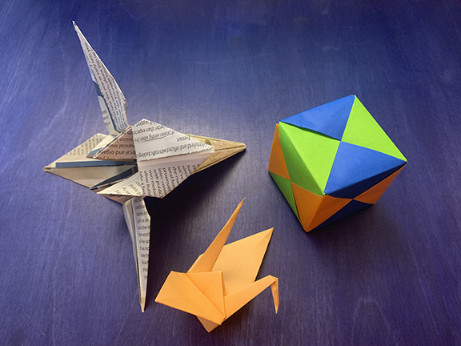
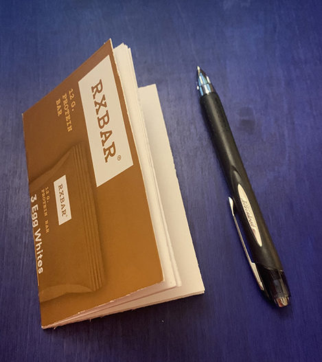

Origami
The first origami pattern I remember making was a sonobe cube in 6th grade. With practice I soon learned how to put together a dodecahedron (12 faces) icosahedron (20 faces) with sonobe pieces. The pieces themselves are relatively easy to make, and do not take a up a lot of room until fully assembled. I would often work on them during class or on longer car rides, leaving behind a trail of these paper balls.
Once I learned how to find books about origami in the library, it was over. I was hooked. Once people in my life found out about this hobby, I started to get packs of beautiful origami paper for gifts. “Origami paper” us cut square and is usually thinner than regular printer paper. I like using it, certainly, but I also like to fold animals and flowers out of found paper, catalogs, junk mail, posters, magazines, wrappers.
Cards and books
Some years ago, I worked at a place called Paper Source, a store that sells cards and gifts, but also paper crafting supplies. There I learned how to make my own cards and stationery, paper decorations, even simple books. Just like with origami, I enjoy using fine papers to make things but also really enjoy using found materials like left over wrapping paper, old calendars and magazines, or any kind of cardboard box.